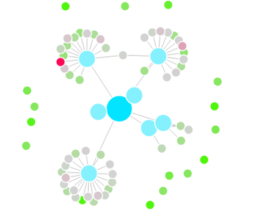

Evening Sessions: Explorations in Data Science and Python Blog.
This is a collection of posts on Python, data science, statistics and workflow. It has been a really valuable part of my STEM-PhD-to-data-scientist trajectory and I pretty often refer back to it when I'm working on data science stuff. I reserve the right to include posts about whatver I feel like rambling about, but so far I haven't exercised it. Blog is built with Pelican.
GeekBuddy Social Graph and Buddy Finder.
 This is a web app that displays the social graph for a user in the boardgamegeek (BGG) community and color nodes by correlation to the user using boardgame ratings data. The app framework is web2py and the visualization is rendered using the d3.js javascript library. Data was acquired by scraping and API queries to BGG, and similarity metric was developed with reference to neighborhood methods of recommender systems.